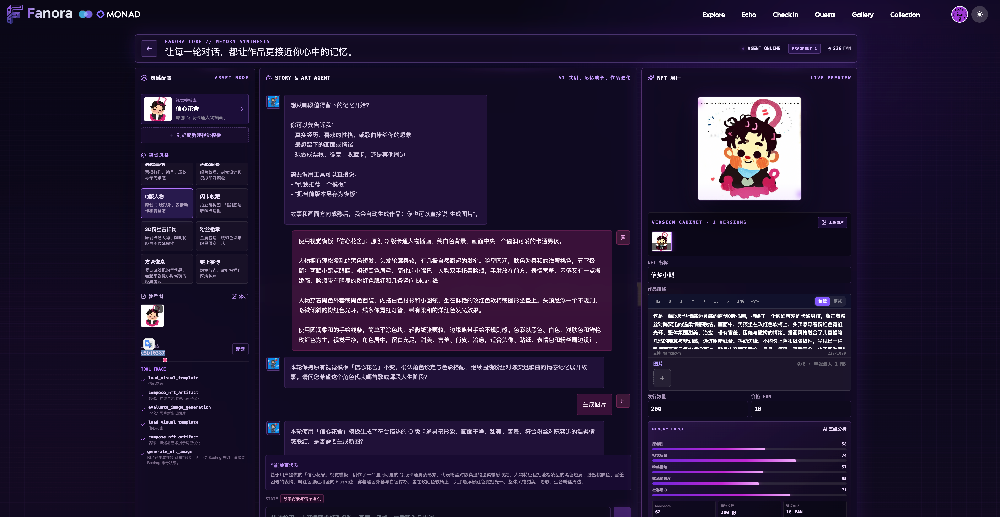

05 / 07
LIVE DEMO PATH
现场演示：一位粉丝如何把故事变成收藏

演示时，我们会打开 Fanora，完成一次参与，向 Agent 讲述一段粉丝故事，生成专属纪念作品，并在 Gallery 里看到它成为可收藏的记忆。
01打开 Fanora
→02完成参与
→03讲述故事
→04生成作品
→05发布收藏
→06Gallery 查看
05 · DEMOOPEN → PARTICIPATE → CREATE → COLLECT
